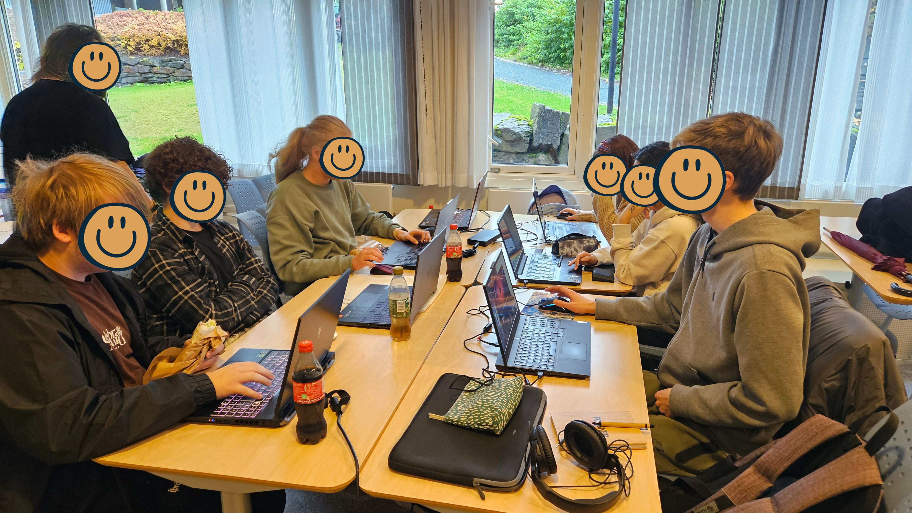
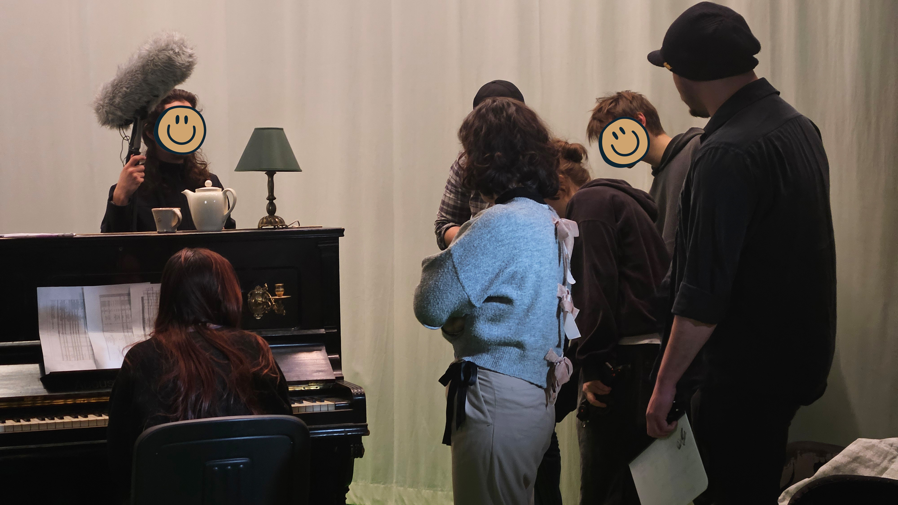

Excited (Centre for Excellent IT Education) is a collaboration between NTNU and Nord University, aiming to improve IT education through innovative teaching methods and collaboration. One of its initiatives is the Excited Workshops, a programme of talks, help sessions and events for Creative Media students at Nord University.
From participant to Team Lead
At first I only participated in the Excited Workshops at Nord University as a first-year student. In my second year, I joined the team as a Teaching Assistant, and in my third year I became Team Lead of the five-person Teaching Assistant team. Throughout both roles, I provided technical support to students and organized and ran workshops.
Technical support
As a Teaching Assistant, I helped students across the Creative Media programs, mainly with 3D, animation and video editing. Most of my technical support involved Maya, particularly modelling, rigging and rendering, but I also helped with tasks in Nuke, Unreal Engine and Unity. Games students often needed help with 3D work, while CG students more often came to me with rigging, rendering or other technical problems in their coursework. I generally preferred to demonstrate how to approach a task rather than do it for the student. When possible, I also explained the underlying concepts, adapted to their level of experience, and pointed out simpler or more efficient ways of working.

One-on-One support
One example was helping two Games students whose character models were not working as expected. Over one to two weeks, I supported them through the character pipeline, from improving their models and understanding topology to rigging, UV unwrapping, texturing, animation and importing their work into Unity. Rather than doing each stage for them, I demonstrated what they needed to do, let them work independently and reviewed their progress when they came back with the next part. They were struggling with the pace and complexity of the course material, so I focused on giving them a manageable workflow and explaining the fundamentals they were missing. I did not push them towards perfect models or advanced rigs when that was not necessary for completing the assignment.
Finding the gaps in the fundamentals
Working with students also made me notice how often difficulties with more advanced tasks came from gaps in basic 3D knowledge, such as understanding objects, parenting or edge loops. Recognizing this, another student and I proposed and created a basic prototype for 3D Space, an educational game intended to help students develop these foundational skills, as part of the Excited Summer Jobs programme.
Organizing the workshops
Alongside technical support, I was involved in developing and organizing workshops from my first year as a Teaching Assistant. This included suggesting topics, contacting alumni and industry professionals, arranging travel and accommodation, booking rooms, organizing food and keeping track of budgets and expenses. I usually found potential speakers through recommendations from teachers and alumni, then contacted them through LinkedIn or Discord. I wanted students to hear from people with different career paths, both freelancers and people working in studios, and from different Creative Media programmes. I asked speakers to talk about their time at Nord, how they got into the industry, what their work involves and what advice they would give to students. I also helped coordinate workshops with lecturers on subjects that were not covered across all programmes, and took responsibility for several events myself. In 2023–24, the team organized 18 workshops, and I was involved in most of them.
Opening the workshops to more programmes
I also wanted the workshops to be useful to students beyond the Games programme, which had been their main audience previously. I spoke with teachers about including CG and film students, and contacted the SpinOff film association to collaborate on movie nights and promote events. I saw the workshops as an opportunity for students from different programmes to meet and learn from each other, not just as a way to fill gaps in the Games curriculum.

Leading the team
In my third year, I became Team Lead of the Teaching Assistant team. I coordinated our work through regular meetings, delegated tasks, followed up on progress and kept in contact with the head teacher. I introduced a shared Notion workspace to make it easier to see what needed to be done and who was responsible for it. We divided recurring tasks more clearly, including workshop promotion, room bookings, food arrangements and uploading workshop materials. I also introduced a feedback form and a workshop archive. When recording was possible and permitted, we uploaded workshop recordings and materials to Discord so students who could not attend could still access them afterwards.
I continued providing technical support during this year, particularly with Maya and Nuke, as well as contributing to workshops and help sessions. At the same time, I took on more responsibility for organizing the programme and supporting the other TAs. This involved managing the available budget and keeping track of expenses and receipts, as well as dealing with practical issues such as arranging food for different dietary requirements and finding alternatives when the budget was reduced or the canteen was unavailable. I also made a greater effort to use the budget to bring in external speakers, including arranging travel and accommodation for a 3D sculptor visiting from Sweden.
Listening to feedback
We organized 29 workshops in 2024–25. During the year, we collected feedback from students and adjusted the programme accordingly. For example, students asked for shorter presentations, so we encouraged speakers to keep their talks under 45 minutes and leave around 30 minutes for questions. They also wanted more opportunities for practical help between the larger talks, so we added more help sessions during the second semester.
What I learned
One of the things I was most pleased with was seeing more students from different programmes attend and take part in the workshops. It gave students more opportunities to interact with people outside their own courses, while also making the programme more relevant to a wider range of students.
Through this experience, I became more comfortable taking responsibility for both technical and organizational work. I also learned to explain technical concepts more clearly, adjust my approach to different levels of experience and recognize when a problem that seems advanced is actually rooted in missing fundamentals.